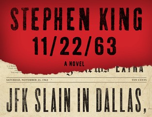
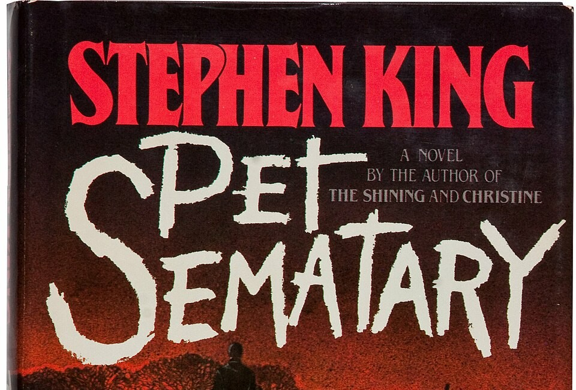

A teacher discovers a way to travel back in time. He tries to stop the assassination of President Kennedy, but changing the past is very dangerous and has big consequences.
During World War II, a man helps a refugee escape from Lisbon. He tells his story of love, loss, and danger in the city.

A family moves to a new house near a mysterious pet cemetery. When tragedy happens, they discover that bringing things back to life can have terrible consequences.